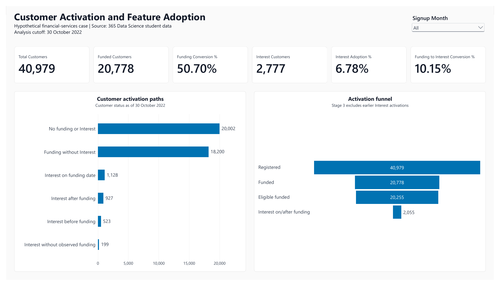
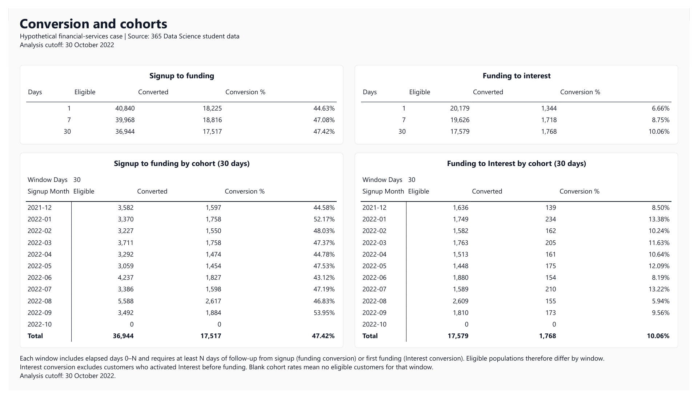
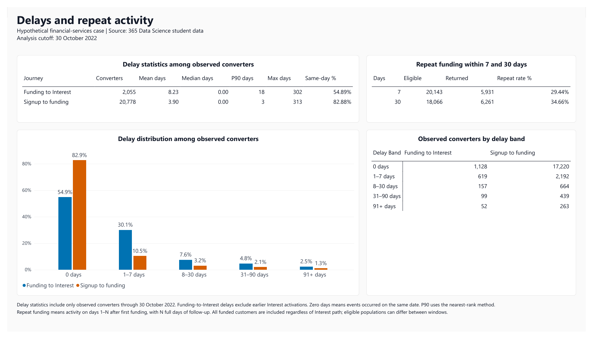

Observed funding
20,778 of 40,979 registrations have observed funding by the exercise cutoff.
Case study · Customer analytics
How many registered users activate, how quickly do they convert, and how do signup cohorts compare when they have equal time to act?
20,778 of 40,979 registrations have observed funding by the exercise cutoff.
17,517 of 36,944 registrations with a full 30 days of follow-up convert within that window.
6,261 of 18,066 funded users with full follow-up return on a later activity day.
What the analysis shows
The snapshot funding rate and the 30-day funding rate answer different questions. They use different observation windows and eligible populations. Reporting the numerator, denominator and time horizon makes that distinction visible.
Both delay medians are zero days, but the means are higher. Long waits pull up the averages: the maximum observed delays are 313 days for signup to funding and 302 days for funding to Interest. These observations were retained.
| Journey | Converters | Mean | Median | P90 |
|---|---|---|---|---|
| Signup to funding | 20,778 | 3.90 | 0 | 3 |
| Funding to Interest | 2,055 | 8.23 | 0 | 18 |
Thirty-day funding conversion is 52.17% for January, 43.12% for June and 53.95% for September 2022. October has no registrations with a full 30-day observation window, so its rate is unavailable. These are descriptive differences; the data cannot establish their causes.
Interest adoption across all registrations is 6.78%. For the sequential funding-to-Interest journey, the rate is 2,055 / 20,255 = 10.15%, after excluding 523 funded users whose first Interest event preceded funding. The funnel's eligible-funded stage is this denominator adjustment.
Method and validation
I ran and reviewed the SQL and Power BI steps, checked results against control totals, and built and tested the reporting model and visuals.
Fictional business labels applied to education data. The source does not contain actual financial-customer observations.
Aggregate event tables before joining them into one row per registration. Preserve registrations without later events, using reporting views, LEFT JOINs and explicit missing values.
Measure conversion over elapsed days 0–N, requiring full follow-up from signup or first funding. Measure repeat activity on later distinct days 1–N.
Use SQL window functions and matching DAX measures for the mean, median, nearest-rank P90 and delay bands. Keep valid zero-day observations separate from absent events.
Check SQL totals against Power BI for the full population, a signup cohort and empty samples. Demonstrate refresh from the existing local MySQL source.
Validation controls: the final reporting view contains 40,979 rows and 40,979 distinct registration IDs, with zero invalid repeat rows and zero event dates after the cutoff. Count measures return zero for empty samples; undefined rates remain blank.
The reporting output
Static exports with Signup Month set to All and an exercise cutoff of 30 October 2022. Open an image at full size to read its labels; filters inside these images are not interactive.



Interpretation and scope
A possible follow-up is to test whether reducing early signup friction improves conversion. That would require suitable intervention and exposure data and is outside this study.